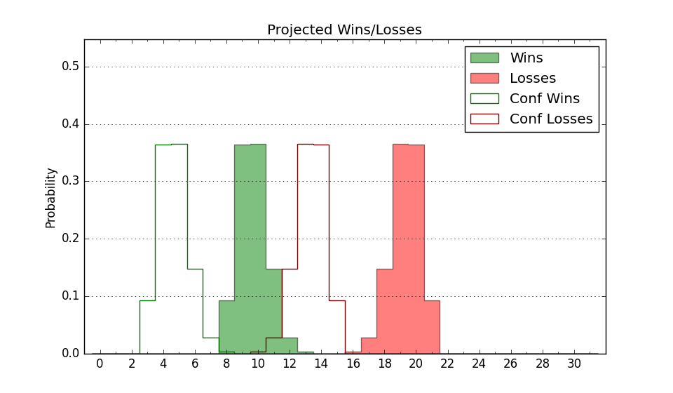

| Home | Game Probabilities | Conferences | Preseason Predictions | Odds Charts | NCAA Tournament |
| City: | Kalamazoo, Michigan | |
| Conference: | Mid-American (10th)
| |
| Record: | 3-9 (Conf) 8-15 (Overall) | |
| Ratings: | Comp.: -12.4 (295th) Net: -12.4 (295th) Off: 106.2 (220th) Def: 118.6 (328th) SoR: 0.0 (106th) |
| Remaining | ||||||
|---|---|---|---|---|---|---|
| Date | Opponent | Win Prob | Pred. | |||
| 2/17 | Akron (74) | 13.8% | L 77-91 | |||
| 2/21 | @ Central Michigan (292) | 34.5% | L 75-79 | |||
| 2/24 | @ Bowling Green (154) | 13.0% | L 68-81 | |||
| 2/28 | Miami OH (90) | 16.9% | L 77-88 | |||
| 3/3 | Ball St. (317) | 73.8% | W 73-67 | |||
| 3/6 | @ Kent St. (169) | 14.3% | L 75-88 | |||
| Previous | Game Score | |||||
| Date | Opponent | Win Prob | Result | Off | Def | Net |
| 11/3 | Coastal Carolina (230) | 50.7% | W 76-71 | -4.5 | 14.1 | 9.6 |
| 11/9 | @Campbell (209) | 18.7% | L 82-91 | -6.8 | 8.7 | 1.9 |
| 11/12 | Fort Wayne (256) | 56.2% | W 83-71 | -7.0 | 18.1 | 11.1 |
| 11/16 | @South Dakota (279) | 31.9% | L 78-83 | 2.7 | -4.4 | -1.6 |
| 11/20 | @Ohio St. (37) | 1.8% | L 58-91 | -18.3 | 7.8 | -10.4 |
| 11/23 | Mount St. Mary's (305) | 70.5% | W 83-60 | 6.9 | 14.5 | 21.4 |
| 11/29 | @Valparaiso (161) | 13.7% | L 55-84 | -21.5 | -8.8 | -30.3 |
| 12/3 | Southern Indiana (341) | 80.6% | W 88-74 | 5.2 | -8.6 | -3.4 |
| 12/6 | @SIU Edwardsville (240) | 25.2% | W 83-73 | 22.7 | 3.3 | 26.0 |
| 12/14 | @Iowa (25) | 1.2% | L 51-91 | -13.1 | -5.3 | -18.4 |
| 12/20 | Buffalo (195) | 40.6% | L 71-88 | -8.2 | -19.3 | -27.5 |
| 12/30 | @Toledo (171) | 14.5% | L 79-84 | 4.5 | 6.0 | 10.4 |
| 1/6 | @Miami OH (90) | 5.6% | L 76-87 | 1.3 | 9.5 | 10.8 |
| 1/10 | Eastern Michigan (222) | 47.7% | W 79-62 | 11.4 | 14.7 | 26.0 |
| 1/13 | Massachusetts (211) | 44.2% | L 82-85 | 12.9 | -11.7 | 1.2 |
| 1/17 | @Akron (74) | 4.5% | L 89-104 | 28.8 | -22.6 | 6.2 |
| 1/20 | Bowling Green (154) | 33.6% | L 54-72 | -23.1 | 2.9 | -20.2 |
| 1/24 | Central Michigan (292) | 64.2% | W 77-65 | 0.4 | 16.2 | 16.6 |
| 1/27 | @Northern Illinois (330) | 48.7% | L 65-85 | 0.1 | -31.8 | -31.6 |
| 2/3 | @Ohio (223) | 21.4% | L 71-91 | -3.9 | -14.5 | -18.4 |
| 2/7 | @Texas St. (250) | 26.5% | L 61-77 | -9.1 | -6.2 | -15.3 |
| 2/11 | Toledo (171) | 36.6% | L 79-90 | 2.6 | -15.4 | -12.7 |
| 2/14 | @Eastern Michigan (222) | 21.1% | W 76-62 | 18.1 | 20.2 | 38.3 |
| Stats & Trends | |||||
|---|---|---|---|---|---|
| Current | Day | Week | Month | Season | |
| Composite | -12.4 | -0.0 | +0.9 | -2.4 | -1.4 |
| Comp Rank | 295 | -- | +2 | -29 | -15 |
| Net Efficiency | -12.4 | -0.0 | +1.0 | -2.6 | -- |
| Net Rank | 295 | -- | +2 | -37 | -- |
| Off Efficiency | 106.2 | +0.0 | +0.9 | +0.8 | -- |
| Off Rank | 220 | +1 | +16 | -6 | -- |
| Def Efficiency | 118.6 | -0.0 | +0.1 | -3.4 | -- |
| Def Rank | 328 | -1 | -- | -36 | -- |
| SoS Rank | 220 | -- | +3 | +27 | -- |
| Exp. Wins | 9.7 | -0.0 | +0.5 | -1.1 | -2.7 |
| Exp. Conf Wins | 4.7 | -0.0 | +0.5 | -1.1 | -3.6 |
| Conf Champ Prob | 0.0 | -- | -- | -- | -2.2 |

| Advanced Stats | ||
|---|---|---|
| Stat | Value | Rank |
| Off Eff FG % | 0.495 | 239 |
| Off Ast Ratio | 0.143 | 208 |
| Off ORB% | 0.301 | 187 |
| Off TO Rate | 0.145 | 165 |
| Off FT Ratio | 0.314 | 276 |
| Def Eff FG % | 0.548 | 290 |
| Def Ast Ratio | 0.172 | 329 |
| Def ORB% | 0.307 | 195 |
| Def TO Rate | 0.116 | 345 |
| Def FT Ratio | 0.362 | 206 |